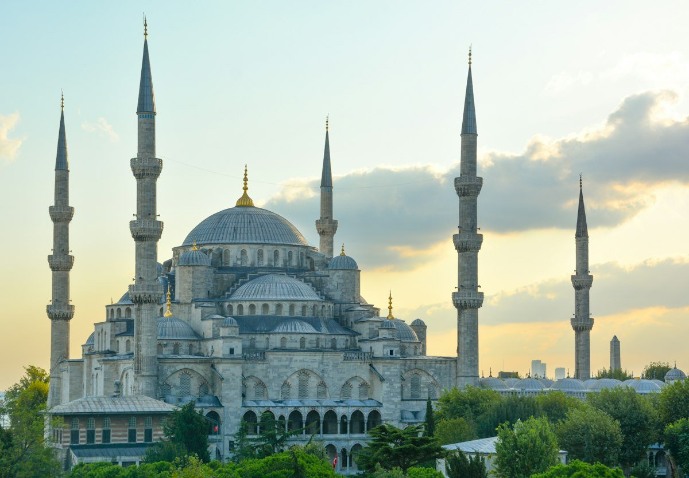

Bahari
Bahari
Kepulauan Raja Ampat
📍 Papua Barat Daya
Nikmati panorama Wayag, Pianemo, serta pengalaman diving di perairan terumbu karang terpadat di dunia.
Bahari
📍 Papua Barat Daya
Nikmati panorama Wayag, Pianemo, serta pengalaman diving di perairan terumbu karang terpadat di dunia.
 Liveaboard
Liveaboard
📍 Flores, NTT
Trekking di puncak bukit Pulau Padar tiga warna pantai dan mengamati satwa purba komodo di habitat alaminya.
 Gunung
Gunung
📍 Probolinggo, Jawa Timur
Menatap fajar emas dari Bukit Cinta dan Penanjakan 1, dilanjutkan menjelajah kawah aktif dan bukit teletubbies.
 Fenomena Alam
Fenomena Alam
📍 Banyuwangi, Jawa Timur
Menyaksikan api biru abadi yang langka di dunia, danau kawah asam berwarna toska, serta hangatnya panorama pagi.
 Kepulauan
Kepulauan
📍 Klungkung, Bali
Tur seharian ke Angel's Billabong, Broken Beach, Diamond Beach, dan panorama spektakuler tebing Kelingking.

Internasional📍 Anatolia Tengah, Turki
Sensasi melayang di atas lembah batu peri dengan ratusan balon udara saat matahari terbit di negeri transkontinental.